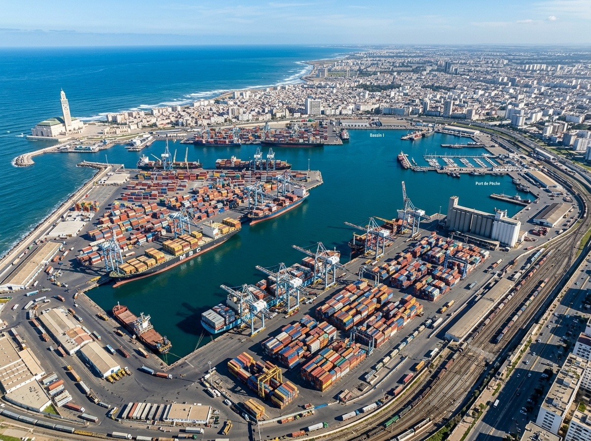
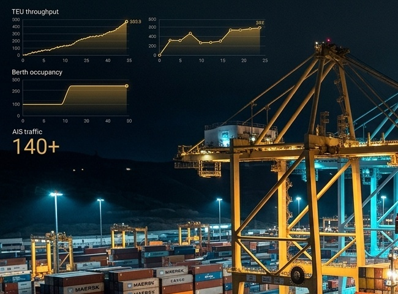
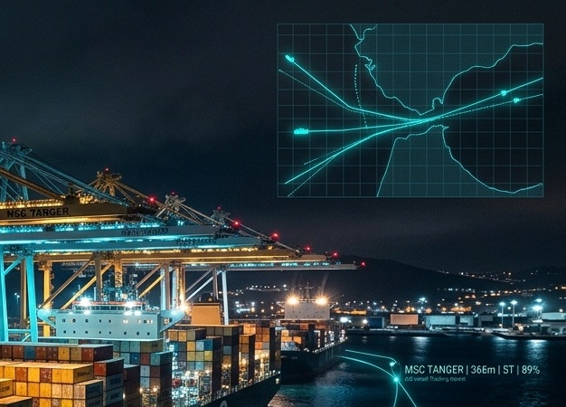

WORLD-CLASS
SOLUTIONS FOR YOUR
MARITIME CORRIDOR
JOURNEY.
Morocco Maritime was built to find a precision in your daily port supply chain routines
Harness sub-second AIS stream ingestion, continuous PostGIS polygon detection, and automated dwell prediction to coordinate berth operations, anchorages, and maritime logistics with zero friction.

CASABLANCA HUBEverything you need, in one service

Unlock possibilities
High-frequency vessel stream processing with strict WGS84 validation, async ingestion queue buffer, and real-time packet parsing under 5 seconds.

Precision at fingertips
100% PostGIS polygon coverage across Tanger Med 1 & 2, Casablanca Port Approach, and the Gibraltar Strait Traffic Separation Scheme.
Freedom to innovate
Automated berth dwell modeling, anchorage bottleneck tracking, and predictive turnaround analytics tailored for harbor authorities and terminal operators.
Enjoy complete
freedom
Unify all vessel traffic, berth occupancy rates, anchorage dwell times, and supply chain telemetry into a single, high-fidelity command interface. Eliminate blind spots across the Strait of Gibraltar and the Atlantic Moroccan approach with sub-second live map updates.
Get startedOur core pillars
Scalability first
Asynchronous bulk queuing buffer capable of processing high-volume packet bursts from hundreds of vessels concurrently.
Real-time edge
High-frequency WebSocket broadcasting delivering instant vessel kinematics, speed over ground, and true heading vectors.
Spatial precision
Strict WGS84 coordinate boundary validation with automated PostGIS polygon entry and exit triggers.
Resilience
Fail-safe ingestion engine with automated fallback simulator and continuous health telemetry.
Fine-tune every detail to perfection.
Control gives you the liberty to experiment.
You ask,
we
answer
It is the only unified intelligence platform purpose-built for the North-Western Moroccan maritime corridor, combining live AISStream feeds, PostGIS geofencing for Tanger Med 1, Tanger Med 2, Casablanca, and automated dwell analysis.
Yes. The platform provides full REST APIs for live telemetry, port metrics, and geofences, alongside high-frequency WebSocket endpoints (`/ws/telemetry`) that plug directly into external TOS and supply chain systems.
AIS telemetry is processed asynchronously in bulk queues with end-to-end pipeline latency under 5 seconds, giving operators true real-time visibility over vessel headings, speed, and status.
Dedicated 24/7 technical monitoring is provided for port authorities, terminal concessionaires, and shipping lines with automated health telemetry and fail-safe fallback simulators.